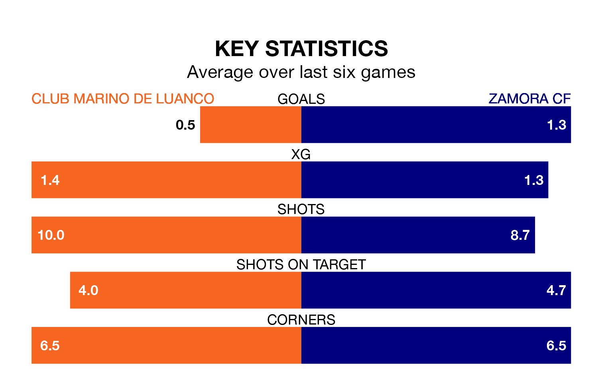

Two of the Segunda División RFEF Group 1's meanest defences go head-to-head at Estadi Municipal de Miramar on Sunday, when Zamora CF visit Club Marino de Luanco.
No teams have conceded fewer goals than Zamora to date: the away side have let in just 17 goals in 31 games.
Club Marino de Luanco have conceded 22 goals in 31 games, giving them the third tightest back line so far this season.
Key to Zamora's home form has been Fermín Sobrón Olarte, who has allowed 0.5 goals past him per 90 minutes, compared to 0.7 for Dennis Díaz Fernánadez in the opposite net.
Zamora are third in the table after 31 games, of which they have won 16 and drawn 11, earning 59 points.
Club Marino de Luanco are nine places behind the visitors in 12th, with seven wins and 15 draws putting them on 36 points.
In the last 10 years, Club Marino de Luanco and Zamora have played each other on six occasions. They won one each, and they drew four times.
On average, Club Marino de Luanco scored 1.0 goal and Zamora 1.0 in those matches.
Their last meeting was on December 10, when they played out a 0-0 draw.
The home team are in bad form in the Segunda División RFEF Group 1, with one win and a draw from their last six games.
With two wins and four draws over that period, Zamora's form is much better – they have taken 10 points from 18, compared to Club Marino de Luanco's four.
Club Marino de Luanco's last match was on April 14, a 1-0 loss against Racing Santander B.
Zamora drew 1-1 with Real Valladolid B last time out, also on April 14, with Joel Priego on the scoresheet.
Updated: 15:40 (UTC), 18/04/24